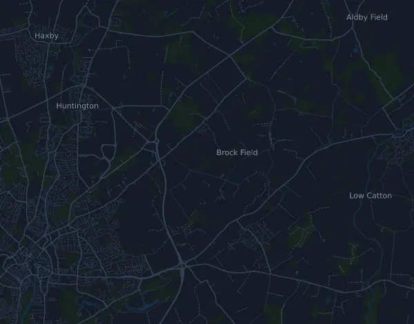

Yorkshire Marathon 42,5 km
- Distance
- 42,5 km
- Dénivelé positif
- ↑ 136 m
- Point culminant
- 42 m d’altitude
- Terrain
- Route
- Profil
- Plat
Profil d’altitude
Prépare-toi avec Mila
Mila est une app avec un coach de course à pied. Ajoute une course à ton plan : le coach planifie tes semaines jusqu’au départ selon ta forme, et te donne un pronostic de temps et un plan pour l’allure, l’hydratation et l’énergie sur le parcours.

La bonne séance. Le bon jour.
Le parcours

À propos du parcours
Altra Yorkshire Marathon est une course sur route de 42,5 km (York, Royaume-Uni). Le parcours compte 136 m de dénivelé positif et 146 m de dénivelé négatif, soit 3,2 m par km : il est donc plat. Le point culminant est à 42 m d’altitude et le point le plus bas à 9 m.
La plus grande montée commence au km 22,3 : 26 m de dénivelé sur 4,3 km, à 0,6 % de moyenne, jusqu’à 38 m d’altitude. Au total, le parcours compte 2 montées d’au moins 25 m ; la dernière commence au km 22,3.
Dans l’app Mila, le coach décrit le parcours en détail dans ta langue et planifie ton allure et ton ravitaillement.
Montées
| Début | Longueur | Dénivelé | Pente | Sommet (m d’altitude) |
|---|---|---|---|---|
| km 0,3 | 13,7 km | 25 m | 0,2 % | 42 |
| km 22,3 | 4,3 km | 26 m | 0,6 % | 38 |
Tableau d’allures
Yorkshire Marathon 42,5 km en 3:00:00 – allure au km et temps de passage
4:14 min/km · km 10 : 42:24 · km 21,1 : 1:29:27 · km 30 : 2:07:11 · km 40 : 2:49:34 · arrivée : 3:00:00
Yorkshire Marathon 42,5 km en 3:30:00 – allure au km et temps de passage
4:57 min/km · km 10 : 49:27 · km 21,1 : 1:44:21 · km 30 : 2:28:22 · km 40 : 3:17:50 · arrivée : 3:30:00
Yorkshire Marathon 42,5 km en 4:00:00 – allure au km et temps de passage
5:39 min/km · km 10 : 56:31 · km 21,1 : 1:59:16 · km 30 : 2:49:34 · km 40 : 3:46:06 · arrivée : 4:00:00
Yorkshire Marathon 42,5 km en 4:30:00 – allure au km et temps de passage
6:22 min/km · km 10 : 1:03:35 · km 21,1 : 2:14:10 · km 30 : 3:10:46 · km 40 : 4:14:21 · arrivée : 4:30:00
Les temps supposent une allure régulière du début à la fin. C’est un simple calcul, pas un pronostic : dans les montées, dans la foule et aux ravitaillements, l’allure varie.
Questions fréquentes
Quand a lieu Yorkshire Marathon 42,5 km ?
La course a eu lieu le dimanche 18 octobre 2026. La date de la prochaine édition n’est pas encore fixée.
Yorkshire Marathon 42,5 km : quelle distance et quel dénivelé ?
La course fait 42,5 km, avec 136 m de dénivelé positif et 146 m de dénivelé négatif. Le point culminant est à 42 m d’altitude.
Yorkshire Marathon 42,5 km : à quoi ressemble le parcours ?
Le parcours est plat, avec 3,2 m de dénivelé par km en moyenne. Il compte 2 montées d’au moins 25 m ; la plus grande commence au km 22,3 : 26 m sur 4,3 km. Il va du départ à une arrivée située ailleurs. On y court sur route.
Yorkshire Marathon 42,5 km : comment gérer mon allure ?
Vise un effort régulier du début à la fin, et retiens-toi sur les premiers kilomètres, quand les jambes sont fraîches et que le peloton part vite. Le parcours est plat, une allure régulière au kilomètre convient donc bien. Dans Mila, tu obtiens un plan d’allure pour ce parcours, adapté à ta forme.
D’autres courses de ce type
Autres courses à proximité
- Brighton Marathon 42,2 km4 avril 2027 · Brighton, Royaume-Uni
- Manchester Marathon 42,2 km18 avril 2027 · Manchester (Old Trafford, Trafford), Royaume-Uni
- London Marathon 42,2 km24 avril 2027 · London, Royaume-Uni
- Three Peaks Race 37,4 km24 avril 2027 · Horton-in-Ribblesdale, Royaume-Uni
- Belfast City Marathon 42,2 km2 mai 2027 · Belfast, Royaume-Uni
- AJ Bell Great Manchester Run 10K23 mai 2027 · Manchester, Royaume-Uni
Prépare-toi avec Mila
La bonne séance. Le bon jour.
Les informations proviennent du fichier du parcours et de l’organisateur. Vérifie la date, les heures de départ et le règlement auprès de l’organisateur.
Mila n’est ni affiliée à l’organisateur ou aux sponsors de la course, ni sponsorisée ou approuvée par eux. Les noms et les marques appartiennent à leurs propriétaires. Organisateur ou ayant droit ? Demander une modification ou un retrait